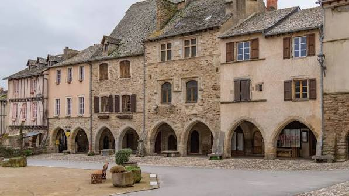

Sauveterre-
de-Rouergue


⟹ Villages & Bastides Royales ⟸
Sur le plateau du Ségala, entre Rodez et Albi, Sauveterre-de-Rouergue déploie son plan en damier presque intact depuis sept siècles. La bastide est fondée en 1281 par Guillaume de Mâcon, sénéchal du Rouergue, au nom du roi Philippe III le Hardi, dans le but d'affirmer le pouvoir royal sur la région et d'y regrouper la population des campagnes, à l'abri des exactions des brigands et des seigneurs voisins.

La fondation ne se fait pas sans tensions : il faut négocier en 1280 un traité de paréage avec l'abbaye cistercienne de Bonnecombe et affronter la résistance des seigneurs locaux, menés par Bégon de la Barrière, seigneur de Castelnau-Peyralès. La ville reçoit sa charte de franchises en 1284, qui lui accorde de nombreuses libertés — d'où son nom, Salva Terra, la « terre sauve ».
Bâtie sur un plan rectangulaire de 225 sur 175 mètres, la bastide s'organise autour d'une vaste place carrée de 60 mètres sur 40, bordée de 47 arcades : c'est la plus grande place à couverts du Rouergue. Dès sa fondation, elle devient un foyer d'artisanat prospère — menuisiers, drapiers, chapeliers, et surtout forgerons-couteliers dont les créations se vendaient jusqu'à Toulouse, Montpellier et Genève — prospérité qui permit la construction de la collégiale Saint-Christophe au début du XIVe siècle.
Aujourd'hui labellisée parmi les Plus Beaux Villages de France, Sauveterre-de-Rouergue demeure l'une des bastides les mieux conservées du Sud-Ouest, avec ses maisons à pans de bois, ses toits de lauze et deux de ses anciennes portes fortifiées.
Salva Terra, la « terre sauve » : la charte de franchises de 1284 offrait aux nouveaux habitants une protection et des libertés inédites, à l'origine du nom même de la bastide.
Un territoire à l'étroit : les seigneurs voisins n'ayant cédé qu'un minimum de terres, Sauveterre s'est retrouvée à la tête d'un territoire si exigu qu'un texte de 1790 le décrit comme « presque réduit à ses murs ».
La capitale du couteau : les forgerons-couteliers de Sauveterre exportaient leurs créations jusqu'à Toulouse, Montpellier et même Genève — une tradition de coutellerie artisanale toujours vivante aujourd'hui dans le village.
Accès libre : la bastide se visite en accès libre toute l'année, à pied, au fil des ruelles et de la place des Arcades ; l'office de tourisme propose des visites guidées et des livrets de découverte.
Animations : le village se met en fête deux fois par an, lors de la Fête de la lumière en août et de la Fête de la châtaigne et du cidre doux fin octobre, ainsi qu'à l'occasion de marchés nocturnes en été.
Sur place : restaurants, boutiques d'artisanat et d'objets décoratifs animent la place centrale et les ruelles attenantes toute l'année.